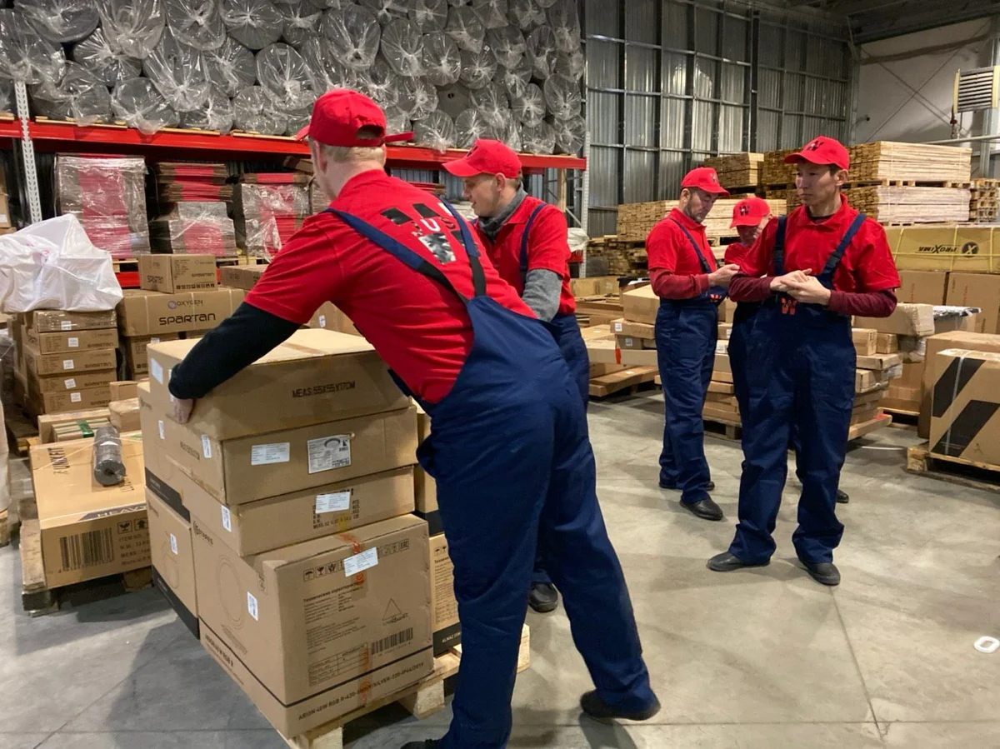

Разнорабочие на производство
На производственных предприятиях требуется не только штат узкоспециализированных сотрудников, но и разнорабочие. Они позволяют грамотно организовать все процессы. Однако держать их в штате на постоянной основе не всегда выгодно. Если Вам нужны разнорабочие на завод, то Вы смело можете обратиться к нам. Предоставим опытных сотрудников для выполнения разнообразных задач в установленные сроки.
Услуги разнорабочих на заводПериодическое задействование разнорабочих позволяет оптимизировать расходы, повысив производительность труда. Это выгодно сыграет роль на формирование себестоимость. Рабочие на заводе могут выполнять следующие задачи:
- Выполнение подсобных и вспомогательных работ.
- Проведение погрузочно-разгрузочных работ различных грузов и материалов.
- Перемещение товаров по объекту, как вручную, так и с помощью тележек.
- Проведение упаковочно-распаковочных работ груза и его размещение на объекте.
- Уборка помещений, мытье различной тары, элементов и изделий.
Это не полный список услуг, которые могут выполнить наши сотрудники. Более подробную информацию Вы можете получить у нашего менеджера. Контакты для связи предоставлены внизу страницы.
Почему стоит заказать разнорабочих на производство у нас?Наша компания предоставляет выгодное сотрудничество для юридических лиц. Вы можете изучить отзывы о работе сотрудников на странице ниже. Мы гарантируем выгодные условия для наших заказчиков:
- Быстрая реакция на полученные заявки и оперативная отправка работников по указанному адресу.
- Предоставление опытных рабочих в нужном количестве. Мы гарантируем, что они выполнят работу полностью соответствуя Вашим ожиданиям.
- Честное и прозрачное ценообразование. Стоимость оказания услуг рассчитывается на этапе подписания договора и остается неизменной.
- Поддержка клиентов 24/7. Мы работаем круглосуточно без выходных и праздничных дней.
- Разрабатываем всю необходимую документацию для оказания услуг и проводим их через бухгалтерию.
Стоимость предоставления разнорабочих на промышленный объект указана на сайте. Однако при крупных заказах мы предоставляем скидки и кэшбек. Подробная информация есть у нашего менеджера.
Оформление заказа - услуг разнорабочихМы принимаем заказы по телефону и электронной почте. Контактные данные указаны на сайте. При оформлении заказа предоставьте следующую информацию: количество работников, которые Вам необходимы, объем предстоящих работ, сроки их выполнения и т.д. На основании этого рассчитывается стоимость. После оценки объема работ и расчета стоимости происходит заключение договора. Все необходимые документы мы подготавливаем самостоятельно. Благодаря этому Вы можете не отвлекаться от остальных важных задач. Обращаясь к нам, Вы можете эффективно решить ряд важных задач и грамотно организовать бизнес-процессы на предприятии. Позвоните или напишите нам для получения всей необходимой информации.
10.08.2022